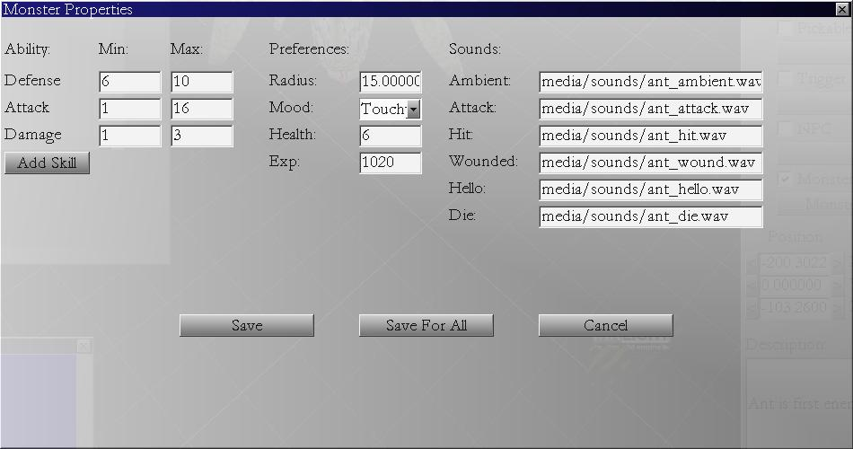

In this tutorial we will talk about adding monsters to the map.
In the "Game Objects" floating window switch to Monsters Tab. You select animated monster like any other
object and put it on the map. Button "Monster Properties" in "Object Properties" window should be enabled. It opens monsters dialog.
Monster dialog displays monster skills and attributes. The idea is to allow user to define its own set of
skills and attributes for each monster, and to easily assign values to them later.
Each monster (each monster type) must have its own xml file where skills and attributes and other parameters are defined.
For example, check Ant xml file "ant01.xml", Health value is 6, so each Ant you place on the map will have default value 6 for Health.
For my own game examle, I defined following monster 'skills': Attack, Defense, Damage. Attributes are: Health and Expirience.
Click "Monster Properties" button. This is Monster Properties dialog window:

In this window, you can change values of monster properties...
If you click 'Save' values will be saved to map file together with the monster object.
When you change properties of one monster, values different from default are saved to map file, indicating they are applied to that monster on that world only.
If you click 'Save for all' values will be saved to monsters xml config file, so all monsters of that type
will have new default values further on.
Add one ant to the map.
Click "Monster Properties" button.
Change HP to 10.
Save for all.
Add new ant to the level.
Click "Monster Properties" button for new ant.
Notice he now has value 10 as default.
Change his HP to 20 and Save (not Save for all).
Scale this ant a little bit, so he gets to be bigger the the rest.
Add few more ants. They all have HP 10, only the big one has 20.
Save your map.
Edit game_config.xml to point to your map.
Start game example.
You should see your map loaded.
Fight ants by clicking on them. Be careful of the big one.
Petar Bajic
MPE (C) All Rights Reserved
Homepage: www.mystic-peanut.com
July, 21 2010.
Index